Incidence and growth rate from case positive counts
This method uses a case positive count dataset bundled with growth
rates which is age stratified (age grouping is in the class
column). We will look at the age stratification in different vignettes
but in this instance we want to aggregate it into an England wide rate.
This is the purpose of time_aggregate() which performs a
simple summarisation.
## Rows: 26,790
## Columns: 5
## Groups: class [19]
## $ date <date> 2023-12-09, 2023-12-09, 2023-12-09, 2023-12-09, 2023-12-09, 202…
## $ class <fct> 00_04, 05_09, 10_14, 15_19, 20_24, 25_29, 30_34, 35_39, 40_44, 4…
## $ count <dbl> 24, 8, 8, 4, 21, 20, 29, 36, 41, 59, 53, 54, 56, 54, 67, 72, 56,…
## $ denom <dbl> 771, 771, 771, 771, 771, 771, 771, 771, 771, 771, 771, 771, 771,…
## $ time <time_prd> 1409, 1409, 1409, 1409, 1409, 1409, 1409, 1409, 1409, 1409,…
tmp = growthrates::england_covid %>%
time_aggregate(count=sum(count))The raw covid case count on a log1p scale is the total
detected cases per day.
fit = tmp %>%
poisson_locfit_model()
plot_incidence(fit,raw = tmp, colour="blue",size=0.025)+
scale_y_log1p(n=7)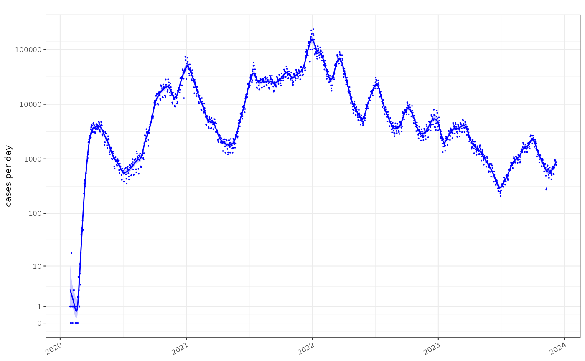
Major events in the timeseries can be plotted on the axes. We’ve focussed on the first 2 years of the pandemic:
plot_incidence(fit, raw = tmp,events = england_events, colour="blue",size=0.025)+
scale_y_log1p(n=7) + ggplot2::coord_cartesian(xlim=as.Date(c("2020-01-01","2022-01-01")))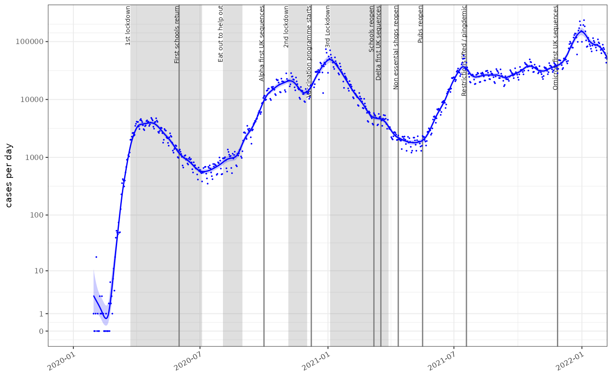
The incidence model assumes case rates result from a Poisson process
and the rate is estimated with a time varying locally fitted polynomial
with degree defined by the deg parameter, using a log link
function, according to the methods of Loader et al. (see
utils::citation("locfit")). The fitting process is a local
maximum likelihood estimation and uses a bandwidth defined to account
for the data points within window of the time point being
estimated.
The gradient of the fitted polynomial on the log scale, is the exponential growth rate. This is a scale independent view of the rate of growth of the epidemic. This estimation methodology is compared to consensus estimates from the SPI-M-O UK government advisory group in red, shifted forward in time by 21 days. The SPI-M-O estimates made during the pandemic were retrospective whereas these ones can use information from before and after the time point and now may better represent the timing of changes.
plot_growth_rate(fit,events = england_events, colour="blue")+
ggplot2::coord_cartesian(xlim=as.Date(c("2020-01-01","2022-01-01")), ylim=c(-0.15,0.15))+
ggplot2::geom_errorbar(data=england_consensus_growth_rate,ggplot2::aes(x=date-21,ymin=low,ymax=high),colour="red")## Coordinate system already present. Adding new coordinate system, which will
## replace the existing one.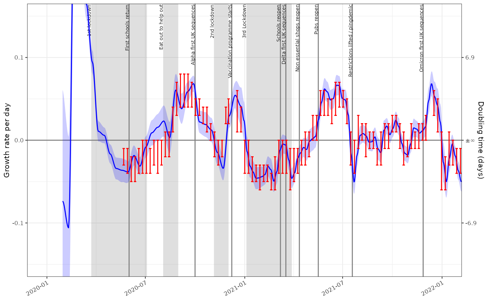
The state of the epidemic is described by both incidence and growth, and the phase plots allow us to see both at different time points. In this case the epidemic state in the 10 weeks leading up to Christmas in 2021, 2022 and 2023:
plot_growth_phase(fit,
timepoints = as.Date(c("Xmas 2020"="2020-12-25","Xmas 2021"="2021-12-25","Xmas 2022"="2022-12-25")),
duration = 70,
interval = 7,
colour="blue"
)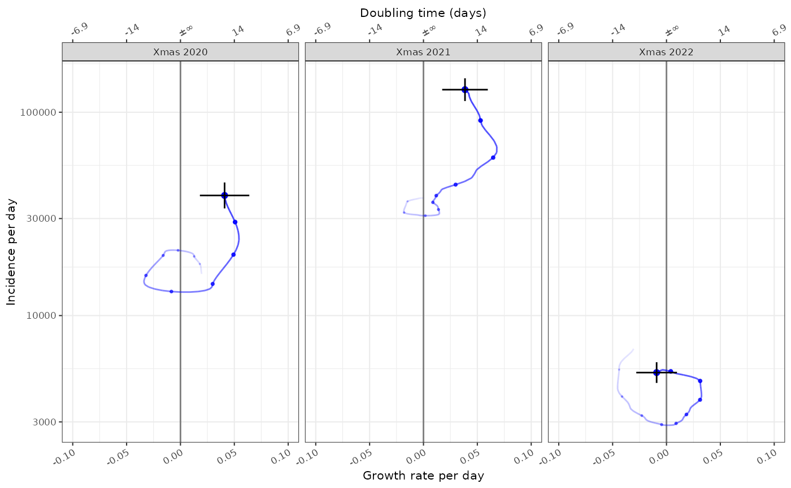
Reproduction number estimation from growth rates
The growth rate has a unit or “per day” in this example. From it we can derive the reproduction number. Using the methods of Wallinga and Lipsitch and an estimate of the infectivity profile of COVID-19. This describes the probability that an infectee is infected x days after the infector, and includes a temporal dimension rendering the reproduction number a dimensionless quantity reflecting the average number of infectees resulting from each infector.
growthrates has an estimate of the infectivity profile
based on a meta-analysis of serial interval estimates of COVID-19. The
infectivity profile is a bootstrapped set of discrete probability
distributions. It is truncated at 14 days.
ggplot2::ggplot()+
ggplot2::geom_errorbar(
data = growthrates::covid_infectivity_profile %>% tidyr::complete(time=0:max(time), fill = list(probability=0)),
mapping = ggplot2::aes(x=as.factor(time),ymin=probability,ymax=probability),
width=1,
colour="blue",
alpha=0.1
)+
ggplot2::geom_line(
data = growthrates::covid_infectivity_profile %>%
dplyr::group_by(time) %>%
dplyr::summarise(m = mean(probability)) %>%
dplyr::ungroup(),
mapping = ggplot2::aes(x=as.factor(time),y=m, group=1),
inherit.aes = FALSE
)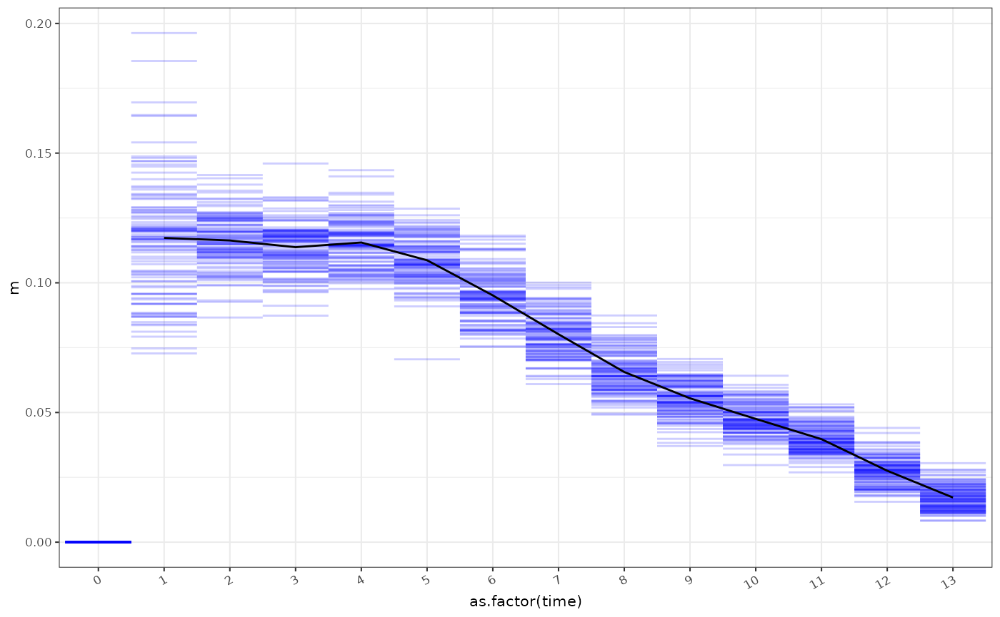
For each growth rate estimate this methods uses 1000 bootstraps to
propagate uncertainty and is hence somewhat slow. Here we use
memoise to cache the result. As with before effective \(R_t\) estimates are compared to consensus
values from the SPI-M-O group (red):
# .cache = memoise::cache_filesystem(rappdirs::user_cache_dir("growthrates"))
#
# cached_rt_from_growth_rate = memoise::memoise(
# growthrates::rt_from_growth_rate,
# cache = .cache
# )
rt_fit = fit %>% growthrates::rt_from_growth_rate(ip = covid_infectivity_profile)
plot_rt(rt_fit, events = england_events, colour="blue")+
ggplot2::coord_cartesian(xlim=as.Date(c("2020-01-01","2022-01-01")), ylim=c(0.6,1.6))+
ggplot2::geom_errorbar(data=england_consensus_rt,ggplot2::aes(x=date-21,ymin=low,ymax=high),colour="red")## Coordinate system already present. Adding new coordinate system, which will
## replace the existing one.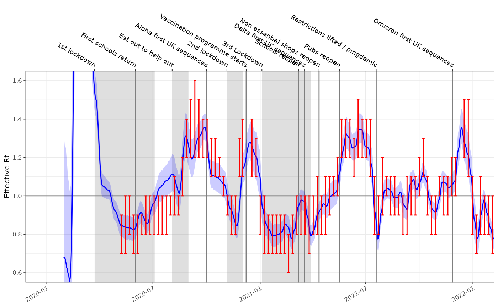
EpiEstim \(R_t\) fits for comparison for the same data, and the same infectivity profile are much more certain and exhibit some oscillation due to the weekly periodicity of the underlying time series.
rt_epi_fit = tmp %>% growthrates::rt_epiestim(ip = covid_infectivity_profile)
plot_rt(rt_epi_fit, events = england_events, colour="blue")+
ggplot2::coord_cartesian(xlim=as.Date(c("2020-01-01","2022-01-01")), ylim=c(0.6,1.6))+
ggplot2::geom_errorbar(data=england_consensus_rt,ggplot2::aes(x=date-7,ymin=low,ymax=high),colour="red")## Coordinate system already present. Adding new coordinate system, which will
## replace the existing one.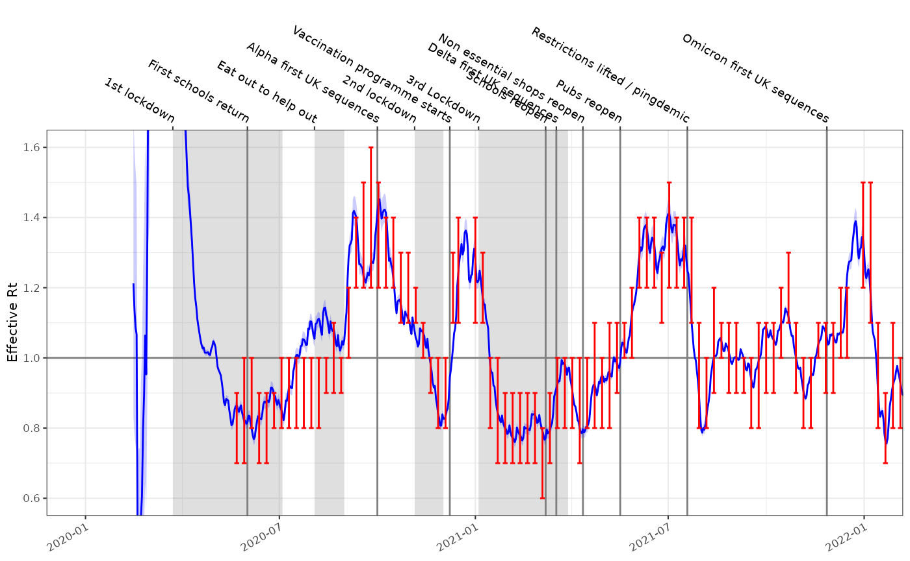
Prevalence and growth rate from test positivity rates
Test availability was not consistent during the pandemic. In the
early stages PCR tests were difficult to obtain and case positive
incidence estimates are thought to be a vast underestimate. During
cetain parts of the pandemic targetted testing of high risk groups
occurred. Test positivity is a different view on the pandemic and
accounts for some of these biases and introduces others of its own. For
this the data must contain a denom column which in this
case represents the number of tests conducted:
## Rows: 1,413
## Columns: 4
## $ date <date> 2023-12-12, 2023-12-11, 2023-12-10, 2023-12-09, 2023-12-08, 202…
## $ time <time_prd> 1444, 1443, 1442, 1441, 1440, 1439, 1438, 1437, 1436, 1435,…
## $ count <dbl> 375, 509, 381, 350, 445, 399, 430, 457, 413, 295, 252, 293, 343,…
## $ denom <dbl> 1707, 5884, 5514, 6001, 7840, 8333, 8946, 10139, 9805, 6445, 638…
fit2 = england_covid_pcr_positivity %>%
growthrates::proportion_locfit_model()
plot_proportion(fit2, england_covid_pcr_positivity, events = england_events, size=0.25, colour="blue")+
ggplot2::coord_cartesian(xlim=as.Date(c("2020-01-01","2022-01-01")))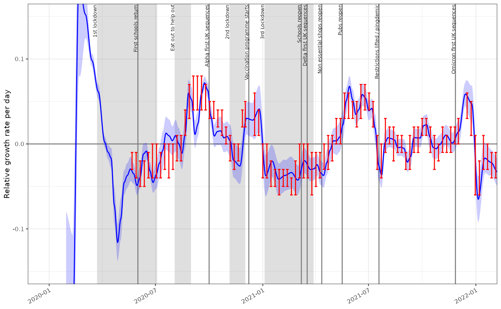
In this case the gradient of the proportion on the logistic scale is an estimate of the growth rate. It is in some senses relative to the growth of the testing effort but in this case produces an answer very similar to the incidence model.
plot_growth_rate(fit2, events = england_events, colour="blue")+
ggplot2::coord_cartesian(xlim=as.Date(c("2020-01-01","2022-01-01")), ylim=c(-0.15,0.15))+
ggplot2::geom_errorbar(data=england_consensus_growth_rate,ggplot2::aes(x=date-21,ymin=low,ymax=high),colour="red")## Coordinate system already present. Adding new coordinate system, which will
## replace the existing one.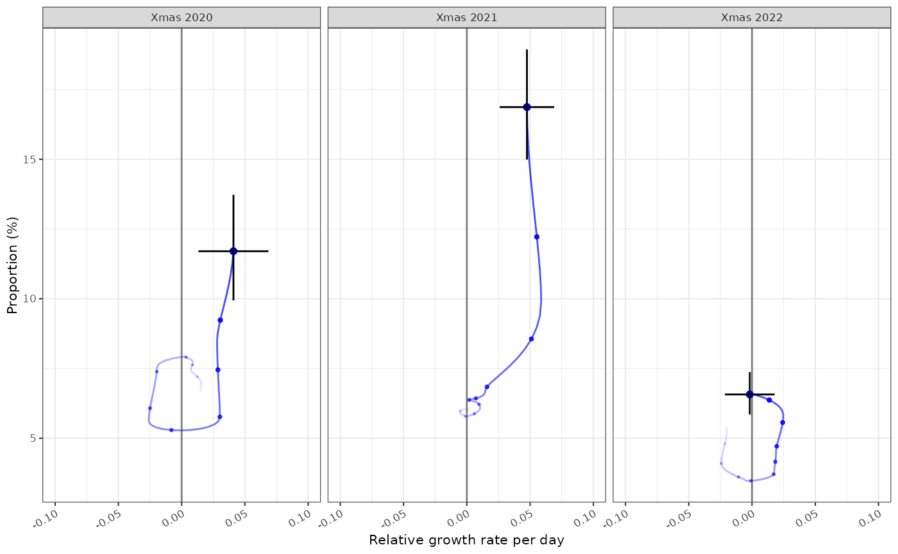
With similar growth rate estimates this method can also theoretically be used to calculate estimates of \(R_t\). Growth-proportion phase diagrams can also compare different points in times or as we will see elsewhere, between different populations.
plot_growth_phase(fit2,
timepoints = as.Date(c("Xmas 2020"="2020-12-25","Xmas 2021"="2021-12-25","Xmas 2022"="2022-12-25")),
duration = 70,
interval = 7,
colour="blue"
)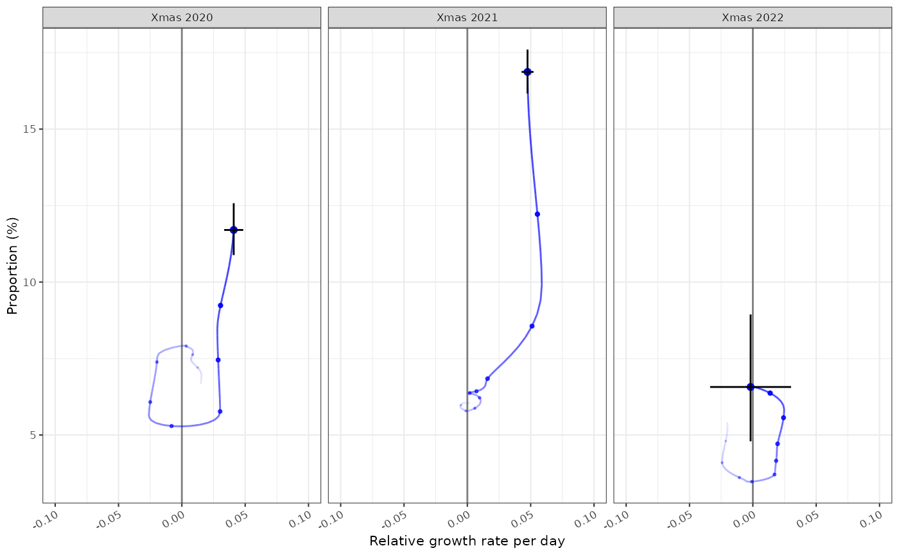
NHS COVID app
The NHS covid app performed digital contact tracing. The rate of venue check-ins demonstrates the levels of high risk social contacts however it became optional from Aug 2021. Self isolation alerts peaked in Aug / Sept 2021 during the Delta wave and again in Dec 2021 / Jan 2022 in the Omicron wave. Periods of rapid growth preceed increases in the NHS app notifications. (N.B. data from https://www.gov.uk/government/publications/nhs-covid-19-app-statistics)
p1 = plot_incidence(fit,events = england_events, colour="blue", date_breaks="3 months")+
ggplot2::coord_cartesian(xlim=as.Date(c("2020-01-01","2023-07-01")))+
ggplot2::facet_wrap(~"Cases")+
ggplot2::theme(axis.text.x.bottom = ggplot2::element_blank())+
scale_y_log1p()
p2 = plot_growth_rate(fit,events = england_events, colour="blue", date_breaks="3 months")+
ggplot2::coord_cartesian(xlim=as.Date(c("2020-01-01","2023-07-01")), ylim=c(-0.15,0.15))+
ggplot2::geom_errorbar(data=england_consensus_growth_rate,ggplot2::aes(x=date-21,ymin=low,ymax=high),colour="red")+
ggplot2::facet_wrap(~"Growth rate")+
ggplot2::theme(axis.text.x.bottom = ggplot2::element_blank(),axis.text.x.top = ggplot2::element_blank())## Coordinate system already present. Adding new coordinate system, which will
## replace the existing one.
p3 = ggplot2::ggplot(growthrates::england_nhs_app)+
geom_events(events=england_events,hide_labels = TRUE)+
ggplot2::geom_step(ggplot2::aes(x=date, y=alerts/mean(alerts, na.rm=TRUE),colour="alerts"))+
ggplot2::geom_step(ggplot2::aes(x=date, y=visits/mean(visits, na.rm=TRUE),colour="venue visits"))+
ggplot2::geom_rect(ggplot2::aes(xmin=date,xmax=dplyr::lead(date), ymin=0, ymax=alerts/mean(alerts, na.rm=TRUE),fill="alerts"), linewidth=0, alpha=0.2)+
ggplot2::geom_rect(ggplot2::aes(xmin=date,xmax=dplyr::lead(date), ymin=0, ymax=visits/mean(visits, na.rm=TRUE),fill="venue visits"), linewidth=0, alpha=0.2)+
ggplot2::coord_cartesian(xlim=as.Date(c("2020-01-01","2023-07-01")))+
ggplot2::ylab("relative frequency")+
ggplot2::xlab(NULL)+
ggplot2::facet_wrap(~"NHS app")+
ggplot2::scale_color_brewer(palette="Dark2", name=NULL, aesthetics = c("fill","colour"))+
ggplot2::scale_x_date(date_breaks="3 months",date_labels = "%b %y")+
ggplot2::theme(legend.position = "bottom")
p1+p2+p3+patchwork::plot_layout(ncol=1)## Warning: Removed 63 rows containing missing values or values outside the scale range
## (`geom_step()`).## Warning: Removed 1 row containing missing values or values outside the scale range
## (`geom_rect()`).## Warning: Removed 63 rows containing missing values or values outside the scale range
## (`geom_rect()`).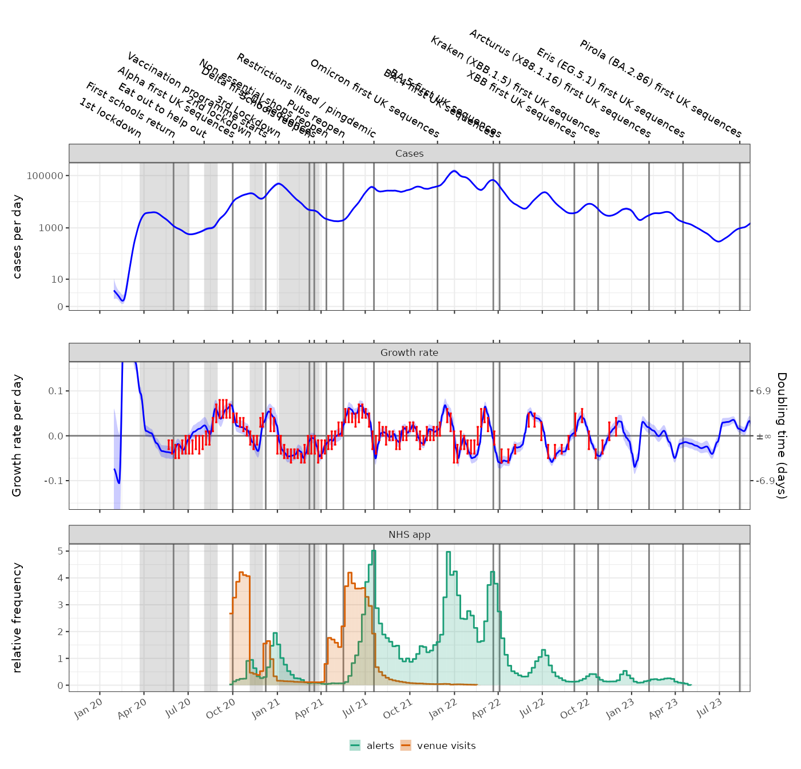